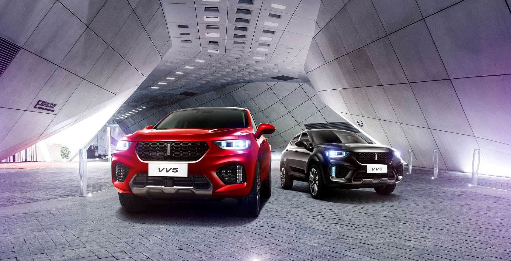
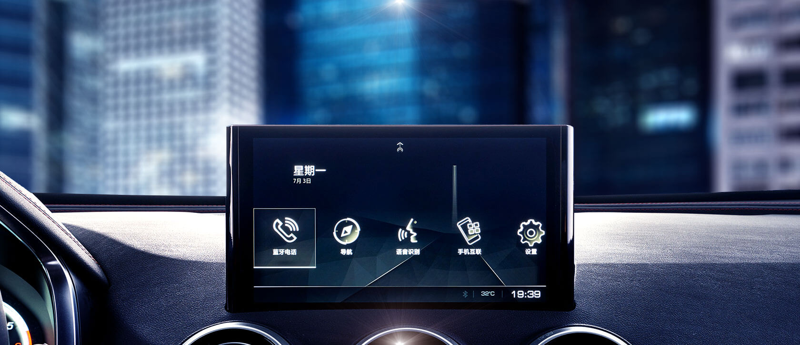
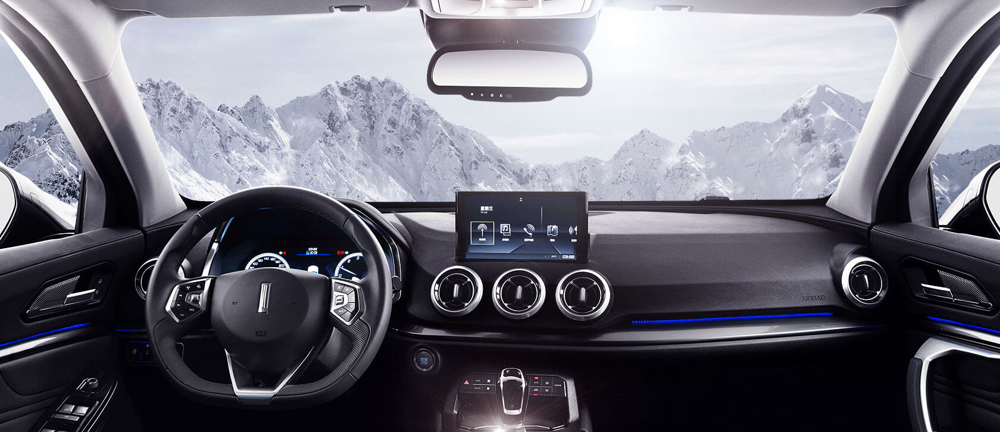
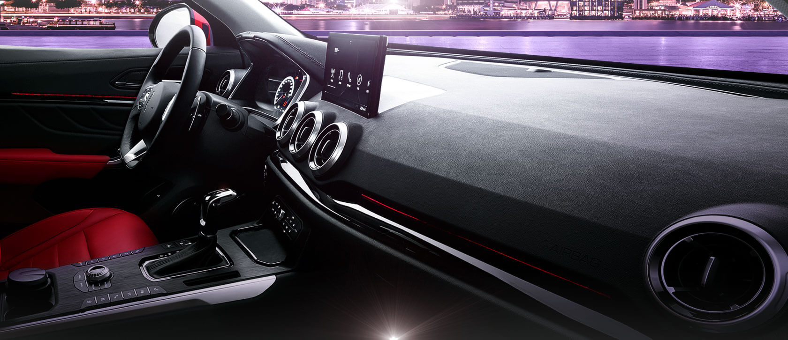
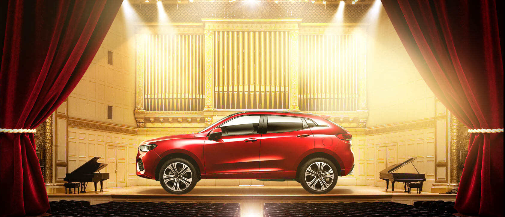
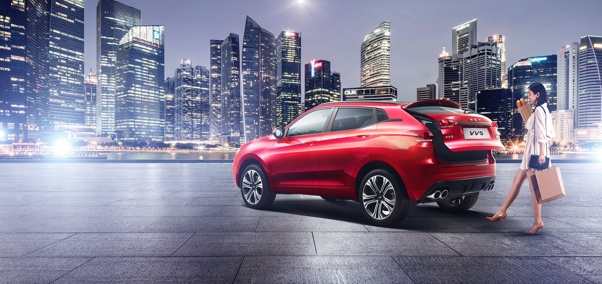

概览
外观
内饰
安全
科技
操控
配置与价格
预约试驾

智享 ◆ 未来 科技
聪明，是一种不动声色的智慧，不动声色中让年轻与世界互联，让年轻与旅程互联，让年轻与智慧互联，
每一个科技智慧，都将与你互联，让年轻，聪明如你！
让智能与 ◆ 你 互联
当你，与智能互联，通往想象的世界变成了真实的旅程。
WEY智能互联技术，让一辆汽车不再只是一辆汽车，
通过远程控制与强大的车联网技术，
你能实现对爱车的全面掌控，享受便捷的生活方式。

两种 ◆ 智慧的 互联
您的汽车可通过Carlife将手机与车载影音系统互联，
使用地图导航、音乐及电话功能，
并且支持第三方服务接入，
提升车载影音系统扩展性，
享受高品质音频输入，
从现在开始，
尽情享受连上手机的车生活吧！

全数字化显示 ◆ 不仅为了 彰显炫酷和年轻
12.3寸全彩高清数字虚拟组合仪表，高清的分辨率屏幕，360º环视全景图立体表达着每一个重要的信息，
高清流媒体广角后视镜，改变传统的驾驶习惯，让全新的科技开启你全新驾驶理念！

空气、温度 ◆ 一切尽在你的 掌控
年轻有为，就是要将一切尽在掌控，事业上如此，生活上更是如此。
全新VV5系列，配备AQS空气质量自动控制系统，
可通自动计算风量，控制温度，让您呼吸的每一口空气都有品质的保障！

青春 ◆ 就要过得 有声有色！
没有音乐的青春不能称之为青春！年轻的日子里，
VV5 全系标配12颗Infinity扬声器并带独立功放，
让您与音乐撞击，让灵魂追随声音的脚步，打开年轻的幻想国度！

解放双手 ◆ 释放自由 去年轻
VV5全系配备雷达感应式电动后背门，支持位置记忆，并具备防夹功能，
更有脚部感应开启开启功能，让您可以以多种方式开启后背门！
解放的您的双手，让年轻去释放去自由！
查找最近经销商
无论你身在何处，通过WEY网络，即可更快更方便地找到您的首选经销商，轻松享受各项专属服务
省/市
浙江省
广东省
福建省
四川省
市/区